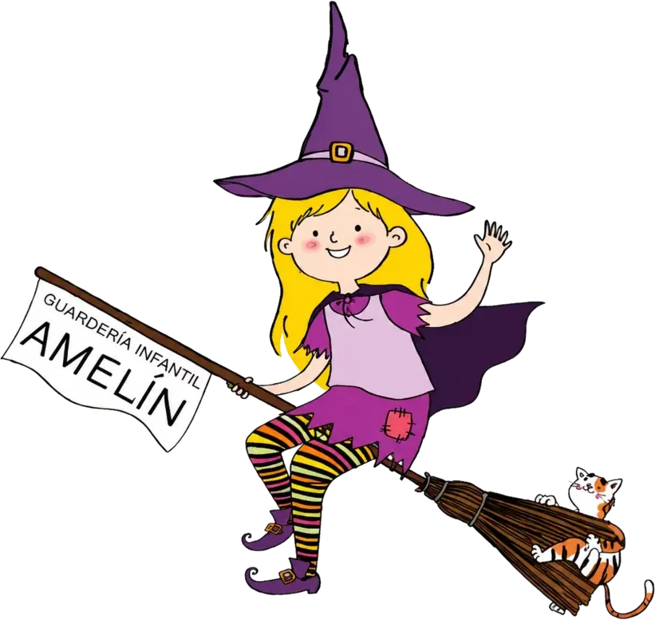
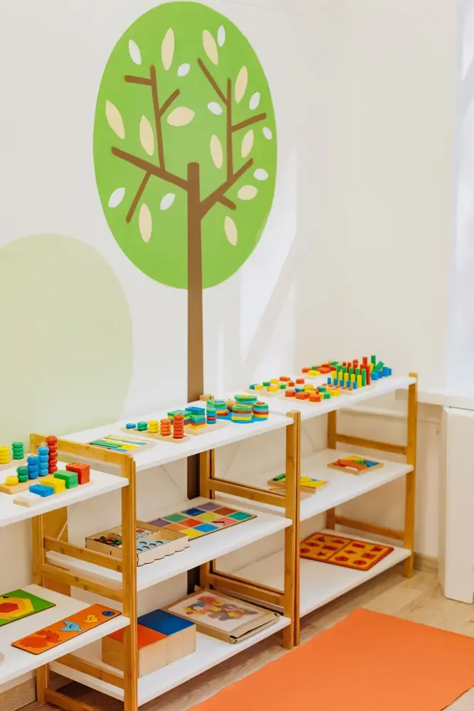
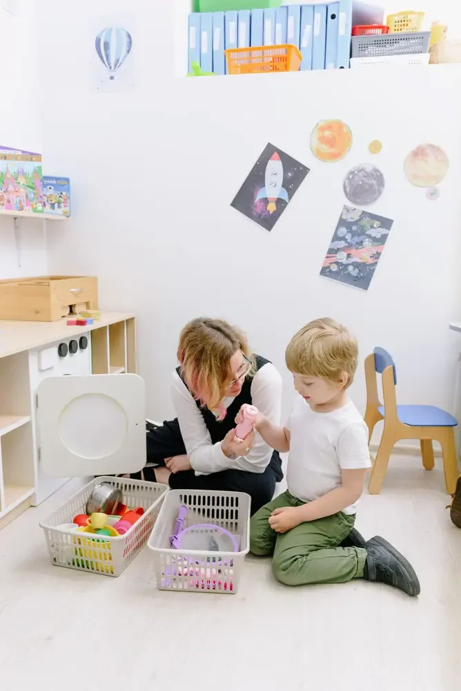
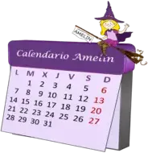

Brujillos
Los más peques. Mucho contacto, rutinas tranquilas y estimulación sensorial para que se sientan como en casa.
- Biberones con agua embotellada
- Purés caseros
- Siesta a demanda

Una guardería pequeña y cercana donde cada peque aprende a su ritmo: juego, rutinas que dan seguridad, comida casera y un equipo que os conoce por vuestro nombre.

Amelín nace con una idea sencilla: acompañar a cada peque con las metodologías, la estimulación y el cariño que necesita para desarrollar todas sus capacidades.
Somos un equipo dirigido por dos diplomadas en Educación Infantil. Trato personalizado, puertas abiertas a las familias y siempre sitio para nuevas ideas y sugerencias.
Nos organizamos según las fases de desarrollo de cada peque (lenguaje, motricidad, autonomía…), no solo por la fecha de nacimiento.
Los más peques. Mucho contacto, rutinas tranquilas y estimulación sensorial para que se sientan como en casa.
Primeros pasos, primeras palabras y mucha exploración. Juego guiado, música y psicomotricidad.
Preparados para el cole: control de esfínteres, lenguaje, convivencia y talleres de experimentación.
Para las familias que necesitan la tarde: llegada a mediodía, siesta, merienda y juego hasta la recogida.
Un ritmo amable y previsible, con espacio para jugar, descansar y descubrir. Haz scroll y acompaña a la escoba.

Hemos adaptado nuestros horarios a lo que nos pedís las familias. Y si un día necesitáis algo distinto, venid por horas sueltas.
Para quienes empiezan pronto el día. Entrada flexible por la mañana y varias opciones de recogida.
Mañanas en casa sin prisas y llegada justo para comer, dormir la siesta y jugar por la tarde.
Grupo especial de tarde: llegan después de comer, siesta, merienda y juego.
¿Turnos que cambian? Combinad franjas y días de la semana. Lo cuadramos juntos.
Una reunión, un médico, un imprevisto… Reservad horas o días sueltos aunque vuestro peque no venga habitualmente.
Todos los horarios incluyen almuerzo, comida o merienda según la franja.

Cada detalle está diseñado para su cuidado y bienestar: sin escalones, sin esquinas duras y con mucha luz.
Almuerzos, comidas y meriendas elaborados por dietistas y adaptados a cada peque: intolerancias, alergias o cualquier necesidad especial. El agua para biberones, siempre embotellada.
Para peques de la guarde y de fuera, hasta los 6 años. Rutinas y actividades especiales para seguir aprendiendo y jugando en compañía.
Talleres abiertos a cualquier familia, vengan o no a la guarde: primeros auxilios en la infancia, alimentación, sueño… ¡y abiertos a vuestras ideas!
Una app web, sin descargas, para que familias y educadoras estéis siempre conectadas. Adiós a las notas en la mochila y a las llamadas a mitad de mañana.
¿No encuentras tu respuesta? Llámanos y te la resolvemos en un momento.
Llamar al 948 062 159
Desde los 4 meses y hasta los 3 años. En verano, la ludoteca amplía la edad hasta los 6 años.
Sí. Además de nuestros horarios fijos (Tempranero, Dormilón, Tardarines y Combinado) podéis reservar horas y días sueltos.
Nuestros menús los elaboran dietistas y se adaptan a cada niño o niña: alergias, intolerancias o cualquier patología. Lo hablamos con vosotros desde el primer día.
Con el Rincón de familias: cada día recibiréis su agenda (comidas, siesta, pañales, estado de ánimo) y podréis escribir a su educadora directamente.
Progresivo y respetuoso, empezando con estancias cortas que se van alargando. Lo planificamos con cada familia según el peque.
¡Claro! Reserva una visita en el formulario de abajo y te enseñamos las salas y resolvemos todas tus dudas.
Cuéntanos un poco sobre tu peque y te llamamos para confirmar el día. Sin compromiso.
Gracias, . Te llamaremos muy pronto para cerrar el día de la visita.